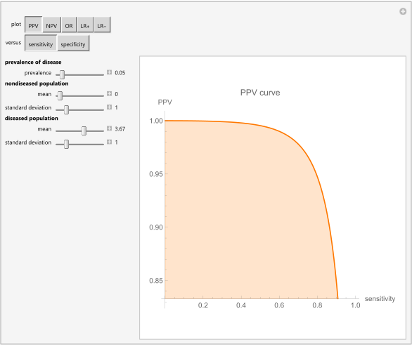

HCSL Publications
Diagnostic Accuracy
1. Hatjimihail AT. Resource review: Whiting P. Quality of diagnostic accuracy studies: The development, use, and evaluation of QUADAS. Bristol: P E Whiting, 2006.Evidence-Based Medicine 2006:11;189.
Full text in Evidence Based Medicine
2. Hatjimihail AT. Receiver Operating Characteristic Curves and Uncertainty of Measurement. Wolfram Demonstrations Project, Champaign: Wolfram Research, Inc., 2007.
Abstract
This Demonstration compares two receiver operating characteristic (ROC) plots of two diagnostic tests (first test: blue plot, second test: orange plot) measuring the same measurand, for normally distributed nondiseased and diseased populations, for various values of the mean and standard deviation of the populations, and of the uncertainty of measurement of the tests. A normal distribution of the uncertainty is assumed. The ratio of the areas under the ROC curves of the two diagnostic tests is calculated. The six parameters that you can vary using the sliders are measured in arbitrary units.

Snapshot
Source code (Revised on 10/03/2021)
3. Hatjimihail AT. Uncertainty of Measurement and Areas Over and Under the ROC Curves. Wolfram Demonstrations Project, Champaign: Wolfram Research, Inc., 2009.
Abstract
This Demonstration compares the ratios of the areas under the curve (AUC) and the ratios of the areas over the curve (AOC) of the receiver operating characteristic (ROC) plots of two diagnostic tests (ratio of the AUC of the first test to the AUC of the second test: blue plot, ratio of the AOC of the first test to the AOC of the second test: orange plot). The two tests measure the same measurand, for normally distributed nondiseased and diseased populations, for various values of the mean and standard deviation of the populations, and of the uncertainty of measurement of the tests. A normal distribution of the uncertainty is assumed. The uncertainty of the first test is defined. It is assumed that the uncertainty of the second test is greater than the uncertainty of the first test and varies up to a user defined upper bound. The six parameters that you can vary using the sliders are measured in arbitrary units.
Comment
The area under a ROC curve is used as an index of the diagnostic accuracy of the respective test. The relative change of the area over the curve against the uncertainty of measurement is greater than the absolute value of the relative change of the area under the curve. Therefore, although the uncertainty of measurement has little effect on the diagnostic accuracy of the test, it has a considerably greater effect on its diagnostic inaccuracy.
To the best of our knowledge, measures of the area over the ROC curve against the uncertainty of measurement have not been discussed in the literature.
Snapshot
Source code (Revised on 10/03/2021)
4. Hatjimihail AT. Uncertainty of Measurement and Diagnostic Accuracy Measures. Wolfram Demonstrations Project, Champaign: Wolfram Research, Inc., 2009.
Abstract
This Demonstration compares various diagnostic accuracy measures of two diagnostic tests. The two tests measure the same measurand, for normally distributed nondiseased and diseased populations, for various values of the prevalence of the disease, of the mean and standard deviation of the populations, and of the uncertainty of measurement of the tests. A normal distribution of the uncertainty is assumed. The mean and the standard deviation of each population and the uncertainty of each test are measured in arbitrary units. The measures compared are the positive predictive value (PPV), the negative predictive value (NPV), the (diagnostic) odds ratio (OR), the likelihood ratio for a positive result (LR+), and the likelihood ratio for a negative result (LR-). The measures are calculated versus the sensitivity or the specificity of each test. That can be selected by pressing the respective button. The types of plot are: both measures (first test: blue plot, second test: orange plot), partial derivatives of both measures with respect to uncertainty (first test: blue plot, second test: orange plot), difference, and ratio of the two measures. The types of plot can be selected by pressing the respective buttons, while the seven parameters can vary using the sliders.
Snapshot
Source code (Revised on 10/03/2021)
5. Chatzimichail T. Analysis of Diagnostic Accuracy Measures. Wolfram Demonstrations Project, Champaign: Wolfram Research, Inc., 2015.
Abstract
This Demonstration shows various diagnostic accuracy measures of a diagnostic test for normally distributed nondiseasdy and diseased populations, for various values of the prevalence of the disease, and of the mean and standard deviation of the populations. The mean and the standard deviation of each population are measured in arbitrary units. The measures shown are the positive predictive value (PPV), the negative predictive value (NPV), the (diagnostic) odds ratio (OR), the likelihood ratio for a positive result (LR+), and the likelihood ratio for a negative result (LR-). The measures are calculated versus the sensitivity or the specificity of each test. That can be selected by clicking the respective button.

Snapshot
Source code (Revised on 10/03/2021)
6. Chatzimichail T. Correlation of Positive and Negative Predictive Values. Wolfram Demonstrations Project, Champaign: Wolfram Research, Inc., 2018.
Abstract
This Demonstration examines the correlation of the negative predictive value (NPV) and the positive predictive value (PPV) of a diagnostic test for normally distributed nondiseased and diseased populations. Differing levels of prevalence of the disease are considered. The mean and standard deviation of the populations, measured in arbitrary units, are used.
Snapshot
Source code (Revised on 10/03/2021)
7. Chatzimichail T, Hatjimihail AT. Analysis of Diagnostic Accuracy Measures for Two Combined Diagnostic Tests. Wolfram Demonstrations Project, Champaign: Wolfram Research, Inc., 2018.
Abstract
This Demonstration shows plots of various accuracy measures for two combined diagnostic tests applied at a single point in time on nondiseased and diseased populations. This is done for differing prevalence of the disease, taking into account the means and standard deviations of the populations and the respective correlation coefficients. The means and standard deviations are expressed in arbitrary units. You can select the following measures of the combined tests using the "plot" popup menu: sensitivity, specificity, positive predictive value, negative predictive value, (diagnostic) odds ratio, likelihood ratio for a positive result, and likelihood ratio for a negative result. These measures are plotted against the sensitivities or the specificities of each single test. You can select them by clicking the respective "versus" button.
Snapshot
Source code (Revised on 10/03/2021)
8. Chatzimichail T, Hatjimihail AT. Relation of Diagnostic Accuracy Measures. Wolfram Demonstrations Project, Champaign: Wolfram Research, Inc., 2018.
Abstract
This Demonstration examines the relation of pairs of accuracy measures of diagnostic tests applied on normally distributed nondiseased and diseased populations. This is done for differing prevalence of the disease, taking into account the means and standard deviations of the populations. The means and standard deviations are expressed in arbitrary units. The measures considered are the positive predictive value ("PPV"), the negative predictive value ("NPV"), the (diagnostic) odds ratio ("OR"), the likelihood ratio for a positive result ("LR+") and the likelihood ratio for a negative result ("LR-"). The measures can be selected by clicking the respective "plot" and "versus" buttons.
Comment
To the best of our knowledge, with the exception of the pair PPV and NPV, the relation of any other pair of the given diagnostic accuracy measures has not been discussed in the literature.
Snapshot
Source code (Revised on 10/03/2021)
9. Chatzimichail T. Calculator for Diagnostic Accuracy Measures. Wolfram Demonstrations Project, Champaign: Wolfram Research, Inc., 2018.
Abstract
This Demonstration calculates various accuracy measures of a diagnostic test for a disease. This is done for differing negative and positive test results of nondiseased and diseased populations. The measures calculated are the sensitivity, the specificity, the positive predictive value ("PPV"), the negative predictive value ("NPV"), the (diagnostic) odds ratio ("OR"), the likelihood ratio for a positive test result ("LR+"), and the likelihood ratio for a negative test result ("LR-"). The negative and positive test results of the nondiseased and diseased populations are selected using the sliders.
Snapshot
Source code (Revised on 10/03/2021)
10. Chatzimichail T, Hatjimihail AT. Calculation of Diagnostic Accuracy Measures. Wolfram Demonstrations Project, Champaign: Wolfram Research, Inc., 2018.
Abstract
This Demonstration shows calculations of point estimations and confidence intervals for various accuracy measures of a diagnostic test for a disease. This is done for differing negative and positive test results of nondiseased and diseased populations and differing p-values for the estimations of the lower and upper bounds of the confidence intervals. The calculated measures are the sensitivity, the specificity, the positive predictive value ("PPV"), the negative predictive value ("NPV"), the (diagnostic) odds ratio ("OR"), the likelihood ratio for a positive test result ("LR+"), and the likelihood ratio for a negative test result ("LR-"). The measures can be selected using the menu. The negative and positive test results of the nondiseased and diseased populations, along with the p-value, are chosen using the sliders.
Comment
The Wilson score method with continuity correction is used for calculating the confidence intervals of the sensitivity, the specificity, the positive predictive value and the negative predictive value. For the calculation of the confidence intervals of the (diagnostic) odds ratio, the likelihood ratio for a positive test result and the likelihood ratio for a negative test result, it is assumed that their natural logarithms have asymptotically normal distributions.
Snapshot
Source code (Revised on 10/03/2021)
11. Hatjimihail AT. The Area Over a Receiver Operating Characteristic (ROC) Curve as an Index of Diagnostic Inaccuracy. Wolfram Demonstrations Project, Champaign: Wolfram Research, Inc., 2018.
Abstract
This Demonstration plots the change, the relative change, the rate of change, and the relative rate of change of the area under (blue plot) and the area over (orange plot) the receiver operating characteristic (ROC) curve of a diagnostic test, as the uncertainty of measurement increases from 0 to a user defined upper bound. The test measures a measurand on normally distributed nondiseased and diseased populations, for various values of the mean and standard deviation of the populations. A normal distribution of the uncertainty is assumed. The type of plot is selected using the "plot" menu. The five parameters that can be varied using the sliders are measured in arbitrary units.
Comment
The area under a ROC curve is used as an index of the diagnostic accuracy of the respective test. Assuming AUC(u) is the area under the ROC curve and AOC(u) is the area over the ROC curve for an uncertainty of measurement u, we have AOC(u) = 1 - AUC(u). Therefore, the area over the ROC curve can be considered as an index of diagnostic inaccuracy. In fact, as the plots of this Demonstration show, the relative change, the rate of change, and the relative rate of change of the area over a ROC curve against the uncertainty of measurement are greater than the respective measures of the area under the ROC curve, for the same populations.
Snapshot
Source code (Revised on 10/03/2021)
12. Chatzimichail T, Hatjimihail AT. A Software Tool for Exploring the Relation between Diagnostic Accuracy and Measurement Uncertainty. Diagnostics 2020, 10(9), 610. DOI: 10.3390/diagnostics10090610
Abstract
Screening and diagnostic tests are used to classify people with and without a disease. Diagnostic accuracy measures are used to evaluate the correctness of a classification in clinical research and practice. Although this depends on the uncertainty of measurement, there has been limited research on their relation. The objective for this work is to develop an exploratory tool for the relation between diagnostic accuracy measures and measurement uncertainty, as diagnostic accuracy is fundamental to clinical decision making, while measurement uncertainty is critical to quality and risk management in laboratory medicine. For this reason, a freely available interactive program was developed for calculating, optimizing, plotting and comparing various diagnostic accuracy measures and the corresponding risk of diagnostic or screening tests measuring a normally distributed measurand, applied at a single point in time in non-diseased and diseased populations. This is done for differing prevalence of the disease, mean and standard deviation of the measurand, diagnostic threshold, standard measurement uncertainty of the tests and expected loss. The application of the program is illustrated with a case study of glucose measurements in diabetic and non-diabetic populations, that demonstrates the relation between diagnostic accuracy measures and measurement uncertainty.The application of the program is illustrated with a case study of glucose measurements in diabetic and non-diabetic populations. The program is user-friendly and can be used as an educational and research tool in medical decision-making.
Snapshot
13. Chatzimichail T, Hatjimihail AT. A Software Tool for Calculating the Uncertainty of Diagnostic Accuracy Measures. Diagnostics. 2021; 11(3):406. DOI: 10.3390/diagnostics11030406.
Abstract
Screening and diagnostic tests are applied for the classification of people into diseased and non-diseased populations. Although diagnostic accuracy measures are used to evaluate the correctness of a classification in clinical research and practice, there has been limited research on their uncertainty. The objective for this work was to develop a tool for calculating the uncertainty of diagnostic accuracy measures, as diagnostic accuracy is fundamental to clinical decision-making. For this reason, the freely available interactive program Diagnostic Uncertainty has been developed in the Wolfram Language. The program provides six modules with nine submodules for calculating and plotting the standard combined, measurement and sampling uncertainty and the resultant confidence intervals of various diagnostic accuracy measures of screening or diagnostic tests, which measure a normally distributed measurand, applied at a single point in time to samples of non-diseased and diseased populations. This is done for differing sample sizes, mean and standard deviation of the measurand, diagnostic threshold and standard measurement uncertainty of the test. The application of the program is demonstrated with an illustrative example of glucose measurements in samples of diabetic and non-diabetic populations, that shows the calculation of the uncertainty of diagnostic accuracy measures. The presented interactive program is user-friendly and can be used as a flexible educational and research tool in medical decision-making, to calculate and explore the uncertainty of diagnostic accuracy measures.
Comment
To the best of our knowledge, this is the first application of the uncertainty propagation to the calculation of the uncertainty of diagnostic accuracy measures.
Snapshot
14. Chatzimichail T. Relation: A Software Tool for Exploring the Relation between Diagnostic Accuracy and Measurement Uncertainty [Poster presentation]. 14th International Diagnostic Error in Medicine Conference, Society to Improve Diagnosis in Medicine, Evanston, Illinois, 2021.
Abstract
Purpose/Problem: Although diagnostic accuracy is fundamental to clinical decision making and measurement uncertainty is critical to quality and risk management in laboratory medicine, there has been very limited research on their relation.
Description of Program: For this reason, the freely available interactive program Relation was developed for calculating, optimizing, plotting and comparing various diagnostic accuracy measures and the corresponding risk of diagnostic or screening tests measuring a normally distributed measurand, applied at a single point in time in non-diseased and diseased populations.
Outcomes: The program demonstrates the relation between the diagnostic accuracy measures and the measurement uncertainty for a screening or diagnostic test measuring a single measurand, for differing prevalence of the disease, mean and standard deviation of the measurand, diagnostic threshold, standard measurement uncertainty of the tests and expected loss. Furthermore, it provides calculators for the calculation of the effects of measurement uncertainty on the diagnostic accuracy measures and corresponding risk and for calculating the diagnostic threshold optimizing objective and loss functions.
Discussion: The program Relation provides 269 different types of plots of diagnostic accuracy measures, many of which are novel. To the best of our knowledge, this is the only program to provide this range of plots without advanced statistical programming.
Significance of Findings: The program Relation is user-friendly and can be used as an educational and research tool in medical decision-making, to explore the relation between measurement uncertainty and diagnostic accuracy.
Comment
Best Education Poster, 14th International Diagnostic Error in Medicine Conference, Society to Improve Diagnosis in Medicine, Evanston, Illinois, October 25-27, 2021 // Virtual.
15. Chatzimichail T. Diagnostic Uncertainty: A Software Tool for Calculating the Uncertainty of Diagnostic Accuracy Measures [Poster presentation]. 14th International Diagnostic Error in Medicine Conference, Society to Improve Diagnosis in Medicine, Evanston, Illinois, 2021.
Abstract
Purpose/Problem: Screening and diagnostic tests are applied for the classification of people into diseased and non-diseased populations. Although diagnostic accuracy measures are used to evaluate the correctness of classification in clinical research and practice, there has been limited research on their uncertainty.
Description of Program: For this reason, the freely available interactive program Diagnostic Uncertainty was developed for calculating the uncertainty of diagnostic accuracy measures of diagnostic or screening tests, measuring a normally distributed measurand, applied at a single point in time in samples of non-diseased and diseased populations.
Outcomes: The program calculates and plots the standard combined, measurement and sampling uncertainty and the resultant confidence intervals of various diagnostic accuracy measures of screening or diagnostic tests, for differing sample sizes, mean and standard deviation of the measurand, diagnostic threshold and standard measurement uncertainty of the test.
Discussion: This program calculates the standard and expanded combined, measurement and sampling uncertainty and the resultant confidence intervals of diagnostic accuracy measures of diagnostic tests, applied to samples of populations, providing 99 different types of plots and three different types of comprehensive tables, many of which are novel. To the best of our knowledge, no software, including all major general or medical statistical and uncertainty related software packages provides this range of plots and tables without advanced programming.
Significance of Findings: The program Diagnostic Uncertainty can be used as a flexible, user-friendly, interactive educational or research tool in medical decision-making, to calculate the uncertainty of diagnostic accuracy measures.